The illustration beside the article
What was the story, what did Joel draw, and what can we learn from the relationship?
Seven article-and-image pairings verified, plus one credited article awaiting its image. Six magazine issues are saved locally, with illustrated opening pages you can enlarge. These are published editorial uses; a credit alone does not establish whether the art was newly commissioned or licensed from existing work.
Each record separates article context, visible forms, and our interpretation. None of these has yet resolved the original publication of your four supplied images.
| Article | Magazine | Date |
|---|---|---|
| A Short Course in Maintenance | Mix | October 1993 |
| The Natives Are Restless | Electronic Musician | March 1996 |
| All the World’s a Stage | Electronic Musician | November 1999 |
| See the Pyramids: A Long Denial | Mix — The Fast Lane | June 2001 |
| Finding Sleep: An Insomniac Learns to Let Go | Spirituality & Health | March–April 2009 |
| Rethinking: The New Science of Thriving | Johns Hopkins Public Health / Hopkins Bloomberg Public Health | Spring 2016; web publication December 18, 2015 |
| The Sense of Place | New Mexico Magazine | November 3, 2015; updated December 7, 2021 |
| After the Famine | Hopkins Bloomberg Public Health | Winter 2014 — Special Issue on Food; web publication February 18, 2014 |
A Short Course in Maintenance
Mel Lambert · October 1993 · Printed pages: 148–149 (opening spread)

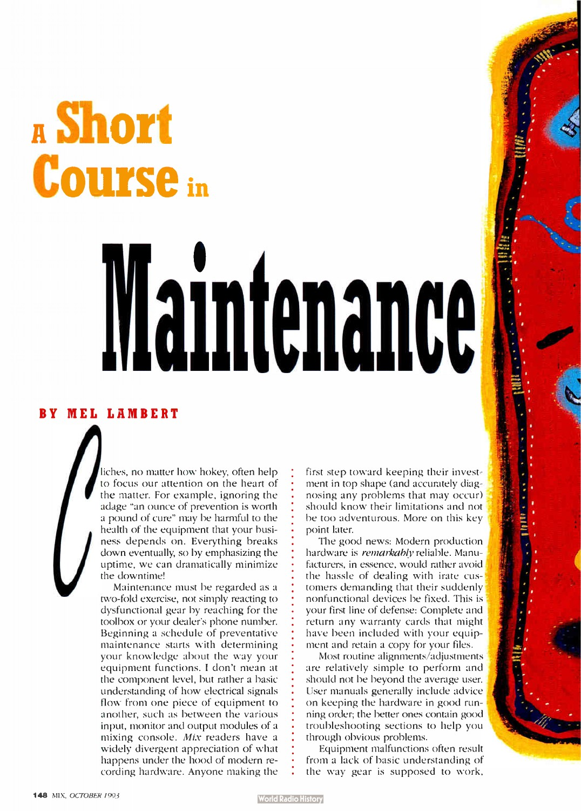

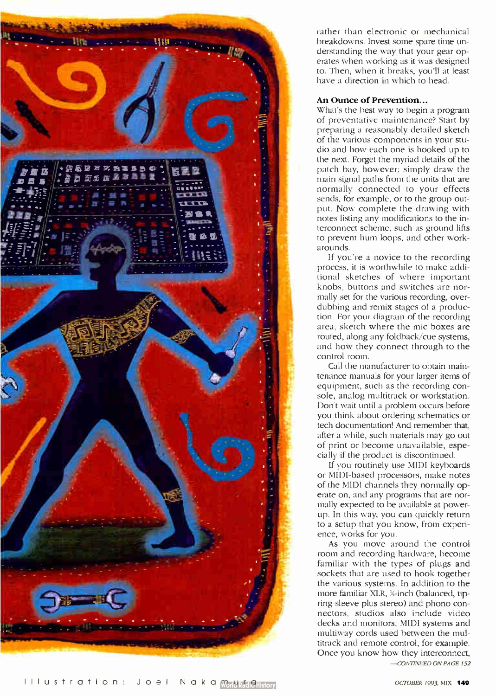
Article context. Practical advice on preventive care and troubleshooting for recording equipment.
Visible forms. A human figure has a mixing console for a head, holds tools, and stands among cables and repair implements within a red framed panel.
Possible reading — our inference. The studio becomes a body that can be cared for. Making the console the head also joins technical equipment to the person responsible for it.
Directing lesson — our extrapolation. Fuse the subject with its caretaker. Let specific working tools anchor the metaphor in the article’s practical task.
Evidence. Illustrator credit and article opening verified in the scanned issue; image inspected.
The Natives Are Restless
Jim Miller · March 1996 · Printed pages: 78–79 (opening spread)

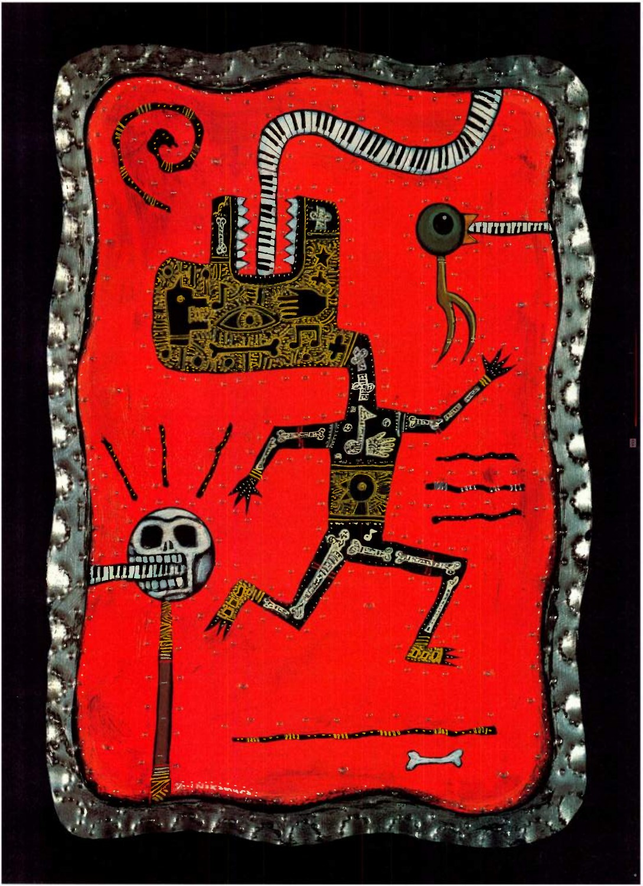

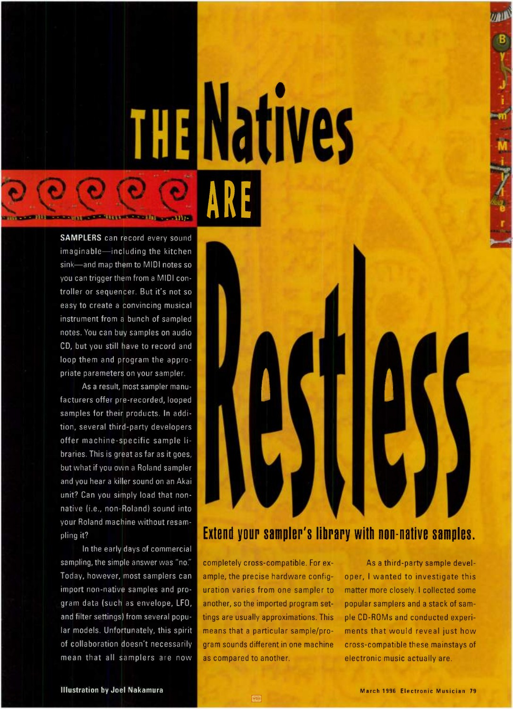
Article context. A comparison of how samplers import sounds and settings from other manufacturers’ instruments.
Visible forms. A patterned creature has a curling piano keyboard passing into its head; a separate eye-like form, skull, and bone shapes surround it.
Possible reading — our inference. The creature turns an electronic instrument into a being with anatomy. The restless pose echoes the headline; the keyboard keeps the technical subject recognizable. The skull’s precise intended meaning is unresolved.
Directing lesson — our extrapolation. Give a technical system anatomy and behavior, but keep one unmistakable functional feature. Avoid assigning a meaning to every ornament.
Evidence. Illustrator credit and article opening verified in the scanned issue; image inspected.
All the World’s a Stage
Karen Stackpole · November 1999 · Printed pages: 76–77 (opening spread)

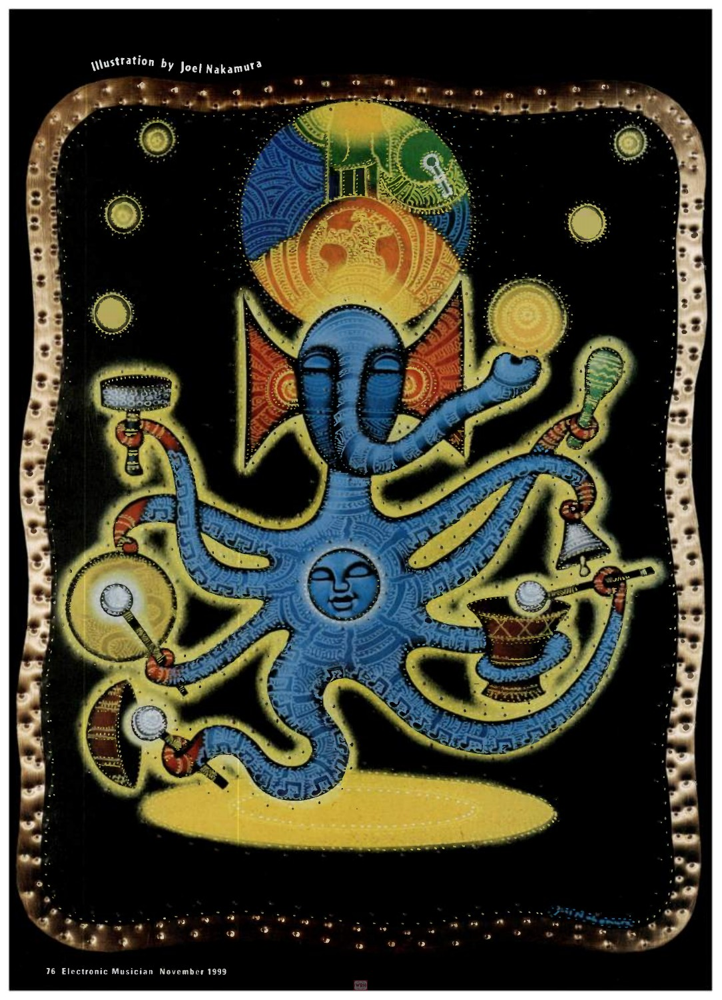

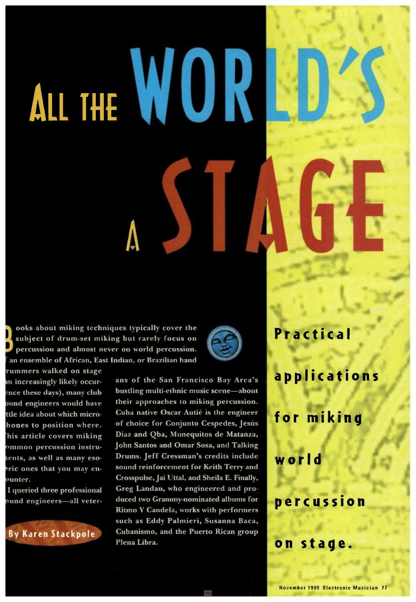
Article context. A guide to microphone placement for live percussion from several musical traditions.
Visible forms. A blue elephant-headed figure has many arms holding percussion instruments and implements. Several circular forms surround its body and crown.
Possible reading — our inference. The many arms gather a varied percussion setup into one performer. The elephant-headed form appears to draw on Ganesha imagery, but the article does not explain that reference or establish a meaning for each object.
Directing lesson — our extrapolation. Multiply a character’s useful parts to express coordination or range. Research culturally specific references before reusing them.
Evidence. Illustrator credit and article opening verified in the scanned issue; image inspected.
See the Pyramids: A Long Denial
Stephen St. Croix · June 2001 · Printed pages: 14, 16 (continues on 212)

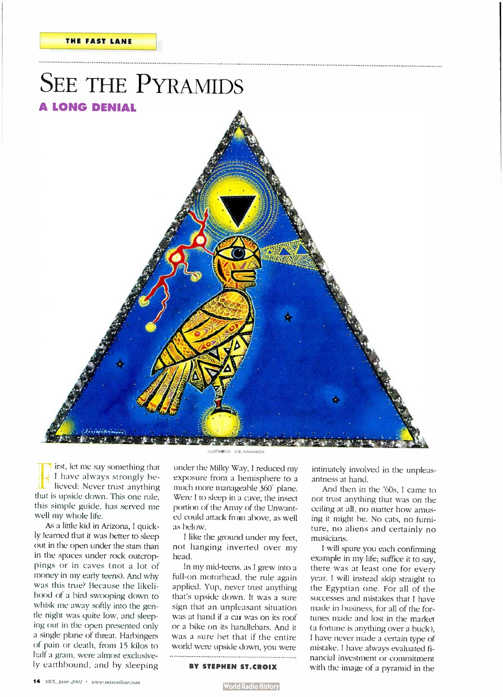

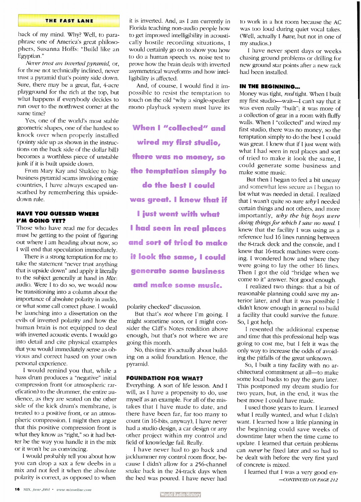
Article context. A column arguing for sound foundations, advance planning, and expert help in studio design and other projects.
Visible forms. A bird-human figure occupies an upright triangular panel; an inverted dark triangle appears inside a bright disk above its head.
Possible reading — our inference. The illustration takes the author’s pyramid metaphor literally. Upright framing and the smaller inverted triangle make stability and inversion visible within the same image.
Directing lesson — our extrapolation. Find the article’s own governing metaphor, then build the composition around its physical rule.
Evidence. Illustrator credit and article opening verified in the scanned issue; image inspected.
Finding Sleep: An Insomniac Learns to Let Go
Edward Readicker-Henderson · March–April 2009 · Printed pages: 58–59

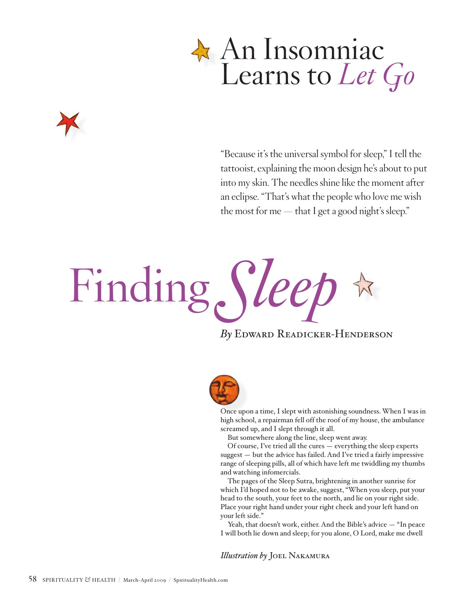

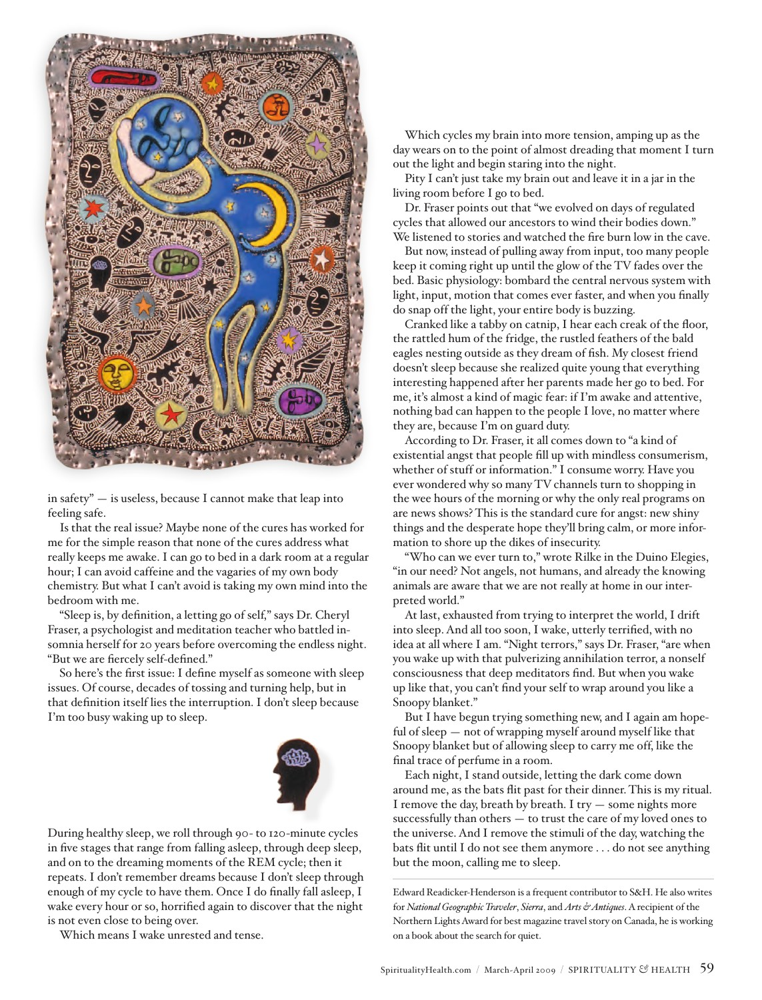
Article context. A personal essay about insomnia, worry, and learning to relinquish vigilance at night.
Visible forms. A blue figure rests its head on a pillow; a yellow crescent sits inside its torso. Faces, eyes, brain silhouettes, stars, and tiny marks fill the surrounding panel. Related small symbols appear among the article’s text.
Possible reading — our inference. The quiet body sits inside a busy mental environment. The moon is brought inside the body, making night and the desired state of rest internal experiences as well as a setting.
Directing lesson — our extrapolation. Put the subject’s inner condition inside the body; use the surrounding field to stage pressure or competing thoughts. Repeat selected motifs as smaller editorial accents.
Evidence. Illustrator credit and article opening verified in the scanned issue; image inspected.
Rethinking: The New Science of Thriving
Christina Bethell · Spring 2016; web publication December 18, 2015 · Printed pages: 18–21

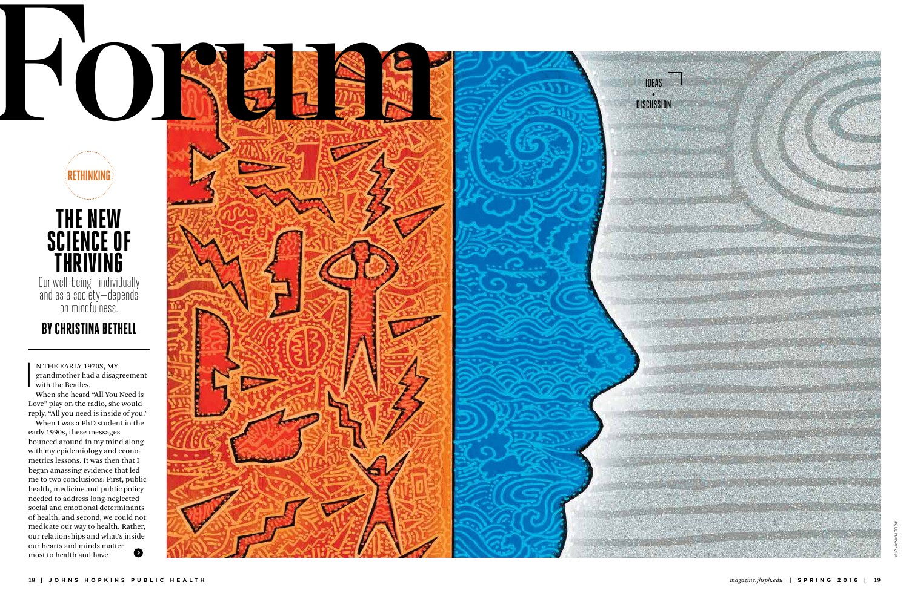

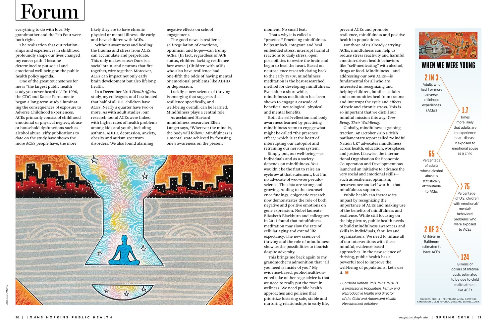
Article context. The author argues that public health should address childhood adversity and support resilience, relationships, and mindfulness.
Visible forms. A large blue profile divides a crowded orange field of figures and jagged marks from calm grey lines. A second image places a small seated figure inside a blue vessel-like opening amid a larger environment.
Possible reading — our inference. Color, density, and the profile boundary make contrasting mental states visible. Nesting the small figure suggests an interior place of attention. This is an interpretation of the illustration, not an endorsement or evaluation of the article’s health claims.
Directing lesson — our extrapolation. Let spatial organization carry the argument: pressure on one side, space on the other, and a person forming the boundary.
Evidence. Illustrator credit and article opening verified in the scanned issue; image inspected.
The Sense of Place
John Muller · November 3, 2015; updated December 7, 2021 · Printed pages: Print pagination not established

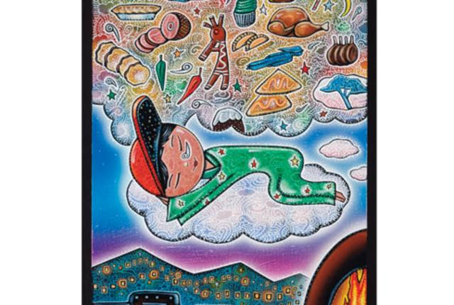
Article context. A newcomer describes Santa Fe through smells, seasons, food, and the memories they evoke.
Visible forms. The publisher’s header image shows a reclining figure on a cloud beneath a field of food imagery; a landscape and fire appear below.
Possible reading — our inference. The dream scene makes sensory memory visible as an environment around a person. The publisher image filename says “Dream of the Feast”; that is retained as an asset label, not a verified original commission title.
Directing lesson — our extrapolation. Turn an invisible sensory experience into a surrounding scene. Let familiar objects make the abstract experience legible.
Evidence. Publisher page explicitly credits Joel Nakamura; the displayed header image was downloaded and inspected. Whether this was newly commissioned or reused art is not established.
After the Famine
Keith West · Winter 2014 — Special Issue on Food; web publication February 18, 2014 · Printed pages: Not yet established
Article context. A nutrition researcher reflects on the Bangladesh famine and the small donation that led to a lasting commitment to work there.
Evidence. Publisher search-indexed article explicitly credits illustration to Joel Nakamura. The page’s illustration has not been recovered; no existing collection image has been assigned to it.
How this changes the director’s guide
The editorial examples show more than an inhabited fantasy world. Joel also ties his imagery to a practical subject: an instrument becomes anatomy, tools specify care, the article’s pyramid metaphor shapes the entire panel, and a profile separates agitation from calm.
For an agent: first identify the article’s tension or governing metaphor. Choose one visual transformation that expresses it. Add secondary symbols only when they deepen that relationship. An appealing collection of motifs is not yet an editorial idea.
Director’s guide · Structured article records · Downloaded source manifest
The Emory Health “Insomnia” portfolio record remains a separate work from the Spirituality & Health illustration above. The Playboy “LSD,” Los Angeles Times “Earthquake,” and Hopkins “Choices” portfolio records still lack exact article matches. This is a first verified set, not a complete bibliography.